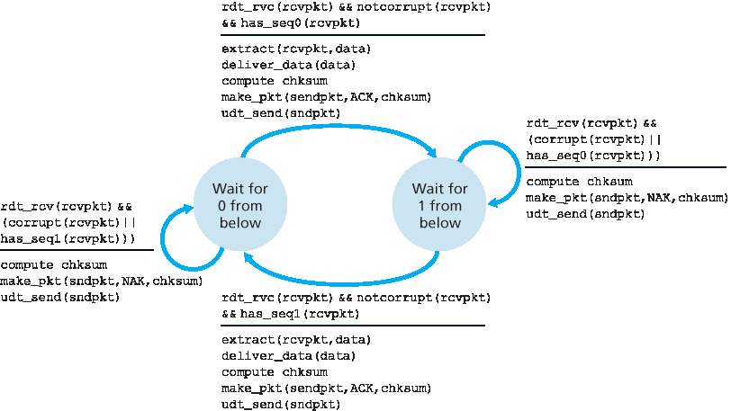
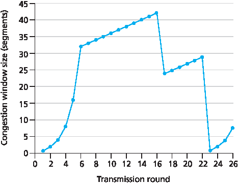

家庭作业问题和疑问#
Homework Problems and Questions
SECTIONS 3.1–3.3#
R1. Suppose the network layer provides the following service. The network layer in the source host accepts a segment of maximum size 1,200 bytes and a destination host address from the transport layer. The network layer then guarantees to deliver the segment to the transport layer at the destination host. Suppose many network application processes can be running at the destination host.
Design the simplest possible transport-layer protocol that will get application data to the desired process at the destination host. Assume the operating system in the destination host has assigned a 4-byte port number to each running application process.
Modify this protocol so that it provides a “return address” to the destination process.
In your protocols, does the transport layer “have to do anything” in the core of the computer network?
R2. Consider a planet where everyone belongs to a family of six, every family lives in its own house, each house has a unique address, and each person in a given house has a unique name. Suppose this planet has a mail service that delivers letters from source house to destination house. The mail service requires that (1) the letter be in an envelope, and that (2) the address of the destination house (and nothing more) be clearly written on the envelope. Suppose each family has a delegate family member who collects and distributes letters for the other family members. The letters do not necessarily provide any indication of the recipients of the letters.
Using the solution to Problem R1 above as inspiration, describe a protocol that the delegates can use to deliver letters from a sending family member to a receiving family member.
In your protocol, does the mail service ever have to open the envelope and examine the letter in order to provide its service?
R3. Consider a TCP connection between Host A and Host B. Suppose that the TCP segments traveling from Host A to Host B have source port number x and destination port number y. What are the source and destination port numbers for the segments traveling from Host B to Host A?
R4. Describe why an application developer might choose to run an application over UDP rather than TCP.
R5. Why is it that voice and video traffic is often sent over TCP rather than UDP in today’s Internet? (Hint: The answer we are looking for has nothing to do with TCP’s congestion-control mechanism.)
R6. Is it possible for an application to enjoy reliable data transfer even when the application runs over UDP? If so, how?
R7. Suppose a process in Host C has a UDP socket with port number 6789. Suppose both Host A and Host B each send a UDP segment to Host C with destination port number 6789. Will both of these segments be directed to the same socket at Host C? If so, how will the process at Host C know that these two segments originated from two different hosts?
R8. Suppose that a Web server runs in Host C on port 80. Suppose this Web server uses persistent connections, and is currently receiving requests from two different Hosts, A and B. Are all of the requests being sent through the same socket at Host C? If they are being passed through different sockets, do both of the sockets have port 80? Discuss and explain.
SECTION 3.4#
R9. In our rdt protocols, why did we need to introduce sequence numbers?
R10. In our rdt protocols, why did we need to introduce timers?
R11. Suppose that the roundtrip delay between sender and receiver is constant and known to the sender. Would a timer still be necessary in protocol rdt 3.0, assuming that packets can be lost? Explain.
R12. Visit the Go-Back-N Java applet at the companion Web site.
Have the source send five packets, and then pause the animation before any of the five packets reach the destination. Then kill the first packet and resume the animation. Describe what happens.
Repeat the experiment, but now let the first packet reach the destination and kill the first acknowledgment. Describe again what happens.
Finally, try sending six packets. What happens?
R13. Repeat R12, but now with the Selective Repeat Java applet. How are Selective Repeat and Go-Back-N different?
SECTION 3.5#
R14. True or false?
Host A is sending Host B a large file over a TCP connection. Assume Host B has no data to send Host A. Host B will not send acknowledgments to Host A because Host B cannot piggyback the acknowledgments on data.
The size of the TCP
rwndnever changes throughout the duration of the connection.Suppose Host A is sending Host B a large file over a TCP connection. The number of unacknowledged bytes that A sends cannot exceed the size of the receive buffer.
Suppose Host A is sending a large file to Host B over a TCP connection. If the sequence number for a segment of this connection is m, then the sequence number for the subsequent segment will necessarily be m+1.
The TCP segment has a field in its header for
rwnd.Suppose that the last
SampleRTTin a TCP connection is equal to 1 sec. The current value ofTimeoutIntervalfor the connection will necessarily be ≥1 sec.Suppose Host A sends one segment with sequence number 38 and 4 bytes of data over a TCP connection to Host B. In this same segment the acknowledgment number is necessarily 42.
R15. Suppose Host A sends two TCP segments back to back to Host B over a TCP connection. The first segment has sequence number 90; the second has sequence number 110.
How much data is in the first segment?
Suppose that the first segment is lost but the second segment arrives at B. In the acknowledgment that Host B sends to Host A, what will be the acknowledgment number?
R16. Consider the Telnet example discussed in Section 3.5 . A few seconds after the user types the letter ‘C,’ the user types the letter ‘R.’ After typing the letter ‘R,’ how many segments are sent, and what is put in the sequence number and acknowledgment fields of the segments?
SECTION 3.7#
R17. Suppose two TCP connections are present over some bottleneck link of rate R bps. Both connections have a huge file to send (in the same direction over the bottleneck link). The transmissions of the files start at the same time. What transmission rate would TCP like to give to each of the connections?
R18. True or false? Consider congestion control in TCP. When the timer expires at the sender, the value of ssthresh is set to one half of its previous value.
R19. In the discussion of TCP splitting in the sidebar in Section 3.7 , it was claimed that the response time with TCP splitting is approximately 4⋅RTTFE+RTTBE+processing time. Justify this claim.
Problems#
P1. Suppose Client A initiates a Telnet session with Server S. At about the same time, Client B also initiates a Telnet session with Server S. Provide possible source and destination port numbers for
The segments sent from A to S.
The segments sent from B to S.
The segments sent from S to A.
The segments sent from S to B.
If A and B are different hosts, is it possible that the source port number in the segments from A to S is the same as that from B to S?
How about if they are the same host?
P2. Consider Figure 3.5 . What are the source and destination port values in the segments flowing from the server back to the clients’ processes? What are the IP addresses in the network-layer datagrams carrying the transport-layer segments?
P3. UDP and TCP use 1s complement for their checksums. Suppose you have the following three 8-bit bytes: 01010011, 01100110, 01110100. What is the 1s complement of the sum of these 8-bit bytes? (Note that although UDP and TCP use 16-bit words in computing the checksum, for this problem you are being asked to consider 8-bit sums.) Show all work. Why is it that UDP takes the 1s complement of the sum; that is, why not just use the sum? With the 1s complement scheme, how does the receiver detect errors? Is it possible that a 1-bit error will go undetected? How about a 2-bit error?
P4.
Suppose you have the following 2 bytes: 01011100 and 01100101. What is the 1s complement of the sum of these 2 bytes?
Suppose you have the following 2 bytes: 11011010 and 01100101. What is the 1s complement of the sum of these 2 bytes?
For the bytes in part (a), give an example where one bit is flipped in each of the 2 bytes and yet the 1s complement doesn’t change.
P5. Suppose that the UDP receiver computes the Internet checksum for the received UDP segment and finds that it matches the value carried in the checksum field. Can the receiver be absolutely certain that no bit errors have occurred? Explain.
P6. Consider our motivation for correcting protocol rdt2.1. Show that the receiver, shown in Figure 3.57 , when operating with the sender shown in Figure 3.11 , can lead the sender and receiver to enter into a deadlock state, where each is waiting for an event that will never occur.
P7. In protocol rdt3.0, the ACK packets flowing from the receiver to the sender do not have sequence numbers (although they do have an ACK field that contains the sequence number of the packet they are acknowledging). Why is it that our ACK packets do not require sequence numbers?

Figure 3.57 An incorrect receiver for protocol rdt 2.1
P8. Draw the FSM for the receiver side of protocol rdt3.0.
P9. Give a trace of the operation of protocol rdt3.0 when data packets and acknowledgment packets are garbled. Your trace should be similar to that used in Figure 3.16 .
P10. Consider a channel that can lose packets but has a maximum delay that is known. Modify protocol rdt2.1 to include sender timeout and retransmit. Informally argue why your protocol can communicate correctly over this channel.
P11. Consider the rdt2.2 receiver in Figure 3.14 , and the creation of a new packet in the self-transition (i.e., the transition from the state back to itself) in the Wait-for-0-from-below and the Wait-for-1-from-below states: sndpkt=make_pkt(ACK, 1, checksum) and sndpkt=make_pkt(ACK, 0, checksum). Would the protocol work correctly if this action were removed from the self-transition in the Wait-for-1-from-below state? Justify your answer. What if this event were removed from the self-transition in the Wait-for-0-from-below state? [Hint: In this latter case, consider what would happen if the first sender-to-receiver packet were corrupted.]
P12. The sender side of rdt3.0 simply ignores (that is, takes no action on) all received packets that are either in error or have the wrong value in the acknum field of an acknowledgment packet. Suppose that in such circumstances, rdt3.0 were simply to retransmit the current data packet. Would the protocol still work? (Hint: Consider what would happen if there were only bit errors; there are no packet losses but premature timeouts can occur. Consider how many times the nth packet is sent, in the limit as n approaches infinity.)
P13. Consider the rdt 3.0 protocol. Draw a diagram showing that if the network connection between the sender and receiver can reorder messages (that is, that two messages propagating in the medium between the sender and receiver can be reordered), then the alternating-bit protocol will not work correctly (make sure you clearly identify the sense in which it will not work correctly). Your diagram should have the sender on the left and the receiver on the right, with the time axis running down the page, showing data (D) and acknowledgment (A) message exchange. Make sure you indicate the sequence number associated with any data or acknowledgment segment.
P14. Consider a reliable data transfer protocol that uses only negative acknowledgments. Suppose the sender sends data only infrequently. Would a NAK-only protocol be preferable to a protocol that uses ACKs? Why? Now suppose the sender has a lot of data to send and the end- to-end connection experiences few losses. In this second case, would a NAK-only protocol be preferable to a protocol that uses ACKs? Why?
P15. Consider the cross-country example shown in Figure 3.17 . How big would the window size have to be for the channel utilization to be greater than 98 percent? Suppose that the size of a packet is 1,500 bytes, including both header fields and data.
P16. Suppose an application uses rdt 3.0 as its transport layer protocol. As the stop-and-wait protocol has very low channel utilization (shown in the cross-country example), the designers of this application let the receiver keep sending back a number (more than two) of alternating ACK 0 and ACK 1 even if the corresponding data have not arrived at the receiver. Would this application design increase the channel utilization? Why? Are there any potential problems with this approach? Explain.
P17. Consider two network entities, A and B, which are connected by a perfect bi-directional channel (i.e., any message sent will be received correctly; the channel will not corrupt, lose, or re-order packets). A and B are to deliver data messages to each other in an alternating manner: First, A must deliver a message to B, then B must deliver a message to A, then A must deliver a message to B and so on. If an entity is in a state where it should not attempt to deliver a message to the other side, and there is an event like rdt_send(data) call from above that attempts to pass data down for transmission to the other side, this call from above can simply be ignored with a call to rdt_unable_to_send(data), which informs the higher layer that it is currently not able to send data. [Note: This simplifying assumption is made so you don’t have to worry about buffering data.] Draw a FSM specification for this protocol (one FSM for A, and one FSM for B!). Note that you do not have to worry about a reliability mechanism here; the main point of this question is to create a FSM specification that reflects the synchronized behavior of the two entities. You should use the following events and actions that have the same meaning as protocol rdt1.0 in Figure 3.9 : rdt_send(data), packet = make_pkt(data), udt_send(packet), rdt_rcv(packet), extract(packet, data), deliver_data(data). Make sure your protocol reflects the strict alternation of sending between A and B. Also, make sure to indicate the initial states for A and B in your FSM descriptions.
P18. In the generic SR protocol that we studied in Section 3.4.4 , the sender transmits a message as soon as it is available (if it is in the window) without waiting for an acknowledgment. Suppose now that we want an SR protocol that sends messages two at a time. That is, the sender will send a pair of messages and will send the next pair of messages only when it knows that both messages in the first pair have been received correctly.
Suppose that the channel may lose messages but will not corrupt or reorder messages. Design an error-control protocol for the unidirectional reliable transfer of messages. Give an FSM description of the sender and receiver. Describe the format of the packets sent between sender
and receiver, and vice versa. If you use any procedure calls other than those in Section 3.4 (for example, udt_send(), start_timer(), rdt_rcv(), and so on), clearly state their actions. Give an example (a timeline trace of sender and receiver) showing how your protocol recovers from a lost packet.
P19. Consider a scenario in which Host A wants to simultaneously send packets to Hosts B and C. A is connected to B and C via a broadcast channel—a packet sent by A is carried by the channel to both B and C. Suppose that the broadcast channel connecting A, B, and C can independently lose and corrupt packets (and so, for example, a packet sent from A might be correctly received by B, but not by C). Design a stop-and-wait-like error-control protocol for reliably transferring packets from A to B and C, such that A will not get new data from the upper layer until it knows that both B and C have correctly received the current packet. Give FSM descriptions of A and C. (Hint: The FSM for B should be essentially the same as for C.) Also, give a description of the packet format(s) used.
P20. Consider a scenario in which Host A and Host B want to send messages to Host C. Hosts A and C are connected by a channel that can lose and corrupt (but not reorder) messages. Hosts B and C are connected by another channel (independent of the channel connecting A and C) with the same properties. The transport layer at Host C should alternate in delivering messages from A and B to the layer above (that is, it should first deliver the data from a packet from A, then the data from a packet from B, and so on). Design a stop-and-wait-like error-control protocol for reliably transferring packets from A and B to C, with alternating delivery at C as described above. Give FSM descriptions of A and C. (Hint: The FSM for B should be essentially the same as for A.) Also, give a description of the packet format(s) used.
P21. Suppose we have two network entities, A and B. B has a supply of data messages that will be sent to A according to the following conventions. When A gets a request from the layer above to get the next data (D) message from B, A must send a request (R) message to B on the A-to-B channel. Only when B receives an R message can it send a data (D) message back to A on the B-to-A channel. A should deliver exactly one copy of each D message to the layer above. R messages can be lost (but not corrupted) in the A-to-B channel; D messages, once sent, are always delivered correctly. The delay along both channels is unknown and variable. Design (give an FSM description of) a protocol that incorporates the appropriate mechanisms to compensate for the loss-prone A-to-B channel and implements message passing to the layer above at entity A, as discussed above. Use only those mechanisms that are absolutely necessary.
P22. Consider the GBN protocol with a sender window size of 4 and a sequence number range of 1,024. Suppose that at time t, the next in-order packet that the receiver is expecting has a sequence number of k. Assume that the medium does not reorder messages. Answer the following questions:
What are the possible sets of sequence numbers inside the sender’s window at time t? Justify your answer.
What are all possible values of the ACK field in all possible messages currently propagating back to the sender at time t? Justify your answer.
Consider the GBN and SR protocols. Suppose the sequence number space is of size k. What is the largest allowable sender window that will avoid the occurrence of problems such as that in Figure 3.27 for each of these protocols?
P24. Answer true or false to the following questions and briefly justify your answer:
With the SR protocol, it is possible for the sender to receive an ACK for a packet that falls outside of its current window.
With GBN, it is possible for the sender to receive an ACK for a packet that falls outside of its current window.
The alternating-bit protocol is the same as the SR protocol with a sender and receiver window size of 1.
The alternating-bit protocol is the same as the GBN protocol with a sender and receiver window size of 1.
P25. We have said that an application may choose UDP for a transport protocol because UDP offers finer application control (than TCP) of what data is sent in a segment and when.
a. Why does an application have more control of what data is sent in a segment? b. Why does an application have more control on when the segment is sent? P26. Consider transferring an enormous file of L bytes from Host A to Host B. Assume an MSS of 536 bytes. a. What is the maximum value of L such that TCP sequence numbers are not exhausted? Recall that the TCP sequence number field has 4 bytes. b. For the L you obtain in (a), find how long it takes to transmit the file. Assume that a total of 66 bytes of transport, network, and data-link header are added to each segment before the resulting packet is sent out over a 155 Mbps link. Ignore flow control and congestion control so A can pump out the segments back to back and continuously.
P27. Host A and B are communicating over a TCP connection, and Host B has already received from A all bytes up through byte 126. Suppose Host A then sends two segments to Host B back-to-back. The first and second segments contain 80 and 40 bytes of data, respectively. In the first segment, the sequence number is 127, the source port number is 302, and the destination port number is 80. Host B sends an acknowledgment whenever it receives a segment from Host A.
In the second segment sent from Host A to B, what are the sequence number, source port number, and destination port number?
If the first segment arrives before the second segment, in the acknowledgment of the first arriving segment, what is the acknowledgment number, the source port number, and the destination port number?
If the second segment arrives before the first segment, in the acknowledgment of the first arriving segment, what is the acknowledgment number?
Suppose the two segments sent by A arrive in order at B. The first acknowledgment is lost and the second acknowledgment arrives after the first timeout interval. Draw a timing diagram, showing these segments and all other segments and acknowledgments sent. (Assume there is no additional packet loss.) For each segment in your figure, provide the sequence number and the number of bytes of data; for each acknowledgment that you add, provide the acknowledgment number.
P28. Host A and B are directly connected with a 100 Mbps link. There is one TCP connection between the two hosts, and Host A is sending to Host B an enormous file over this connection. Host A can send its application data into its TCP socket at a rate as high as 120 Mbps but Host B can read out of its TCP receive buffer at a maximum rate of 50 Mbps. Describe the effect of TCP flow control.
P29. SYN cookies were discussed in Section 3.5.6.
Why is it necessary for the server to use a special initial sequence number in the SYNACK?
Suppose an attacker knows that a target host uses SYN cookies. Can the attacker create half-open or fully open connections by simply sending an ACK packet to the target? Why or why not?
Suppose an attacker collects a large amount of initial sequence numbers sent by the server. Can the attacker cause the server to create many fully open connections by sending ACKs with those initial sequence numbers? Why?
P30. Consider the network shown in Scenario 2 in Section 3.6.1 . Suppose both sending hosts A and B have some fixed timeout values.
Argue that increasing the size of the finite buffer of the router might possibly decrease the throughput (λout).
Now suppose both hosts dynamically adjust their timeout values (like what TCP does) based on the buffering delay at the router. Would increasing the buffer size help to increase the throughput? Why?
P31. Suppose that the five measured SampleRTT values (see Section 3.5.3 ) are 106 ms, 120 ms, 140 ms, 90 ms, and 115 ms. Compute the EstimatedRTT after each of these SampleRTT values is obtained, using a value of α=0.125 and assuming that the value of EstimatedRTT was 100 ms just before the first of these five samples were obtained. Compute also the DevRTT after each sample is obtained, assuming a value of β=0.25 and assuming the value of DevRTT was 5 ms just before the first of these five samples was obtained. Last, compute the TCP TimeoutInterval after each of these samples is obtained.
P32. Consider the TCP procedure for estimating RTT. Suppose that α=0.1. Let SampleRTT1 be the most recent sample RTT, let SampleRTT2 be the next most recent sample RTT, and so on.
a. For a given TCP connection, suppose four acknowledgments have been returned with corresponding sample RTTs: SampleRTT4, SampleRTT3, SampleRTT2, and
SampleRTT1. Express EstimatedRTT in terms of the four sample RTTs.
b. Generalize your formula for n sample RTTs.
c. For the formula in part (b) let n approach infinity. Comment on why this averaging procedure is called an exponential moving average.
P33. In Section 3.5.3 , we discussed TCP’s estimation of RTT. Why do you think TCP avoids measuring the SampleRTT for retransmitted segments?
P34. What is the relationship between the variable SendBase in Section 3.5.4 and the variable LastByteRcvd in Section 3.5.5 ?
P35. What is the relationship between the variable LastByteRcvd in Section 3.5.5 and the variable y in Section 3.5.4?
P36. In Section 3.5.4 , we saw that TCP waits until it has received three duplicate ACKs before performing a fast retransmit. Why do you think the TCP designers chose not to perform a fast retransmit after the first duplicate ACK for a segment is received?
P37. Compare GBN, SR, and TCP (no delayed ACK). Assume that the timeout values for all three protocols are sufficiently long such that 5 consecutive data segments and their corresponding ACKs can be received (if not lost in the channel) by the receiving host (Host B) and the sending host (Host A) respectively. Suppose Host A sends 5 data segments to Host B, and the 2nd segment (sent from A) is lost. In the end, all 5 data segments have been correctly received by Host B.
How many segments has Host A sent in total and how many ACKs has Host B sent in total? What are their sequence numbers? Answer this question for all three protocols.
If the timeout values for all three protocol are much longer than 5 RTT, then which protocol successfully delivers all five data segments in shortest time interval?
P38. In our description of TCP in Figure 3.53 , the value of the threshold, ssthresh, is set as ssthresh=cwnd/2 in several places and ssthresh value is referred to as being set to half the window size when a loss event occurred. Must the rate at which the sender is sending when the loss event occurred be approximately equal to cwnd segments per RTT? Explain your answer. If your answer is no, can you suggest a different manner in which ssthresh should be set?
P39. Consider Figure 3.46(b) . If λ′in increases beyond R/2, can λout increase beyond R/3? Explain. Now consider Figure 3.46(c) . If λ′in increases beyond R/2, can λout increase beyond R/4 under the assumption that a packet will be forwarded twice on average from the router to the receiver? Explain.
P40. Consider Figure 3.58 . Assuming TCP Reno is the protocol experiencing the behavior shown above, answer the following questions. In all cases, you should provide a short discussion justifying your answer.

Examining the behavior of TCP
Identify the intervals of time when TCP slow start is operating.
Identify the intervals of time when TCP congestion avoidance is operating.
After the 16th transmission round, is segment loss detected by a triple duplicate ACK or by a timeout?
After the 22nd transmission round, is segment loss detected by a triple duplicate ACK or by a timeout?

Figure 3.58 TCP window size as a function of time
What is the initial value of ssthresh at the first transmission round?
What is the value of ssthresh at the 18th transmission round?
What is the value of ssthresh at the 24th transmission round?
During what transmission round is the 70th segment sent?
i. Assuming a packet loss is detected after the 26th round by the receipt of a triple duplicate ACK, what will be the values of the congestion window size and of ssthresh ? j. Suppose TCP Tahoe is used (instead of TCP Reno), and assume that triple duplicate ACKs are received at the 16th round. What are the ssthresh and the congestion window size at the 19th round? k. Again suppose TCP Tahoe is used, and there is a timeout event at 22nd round. How many packets have been sent out from 17th round till 22nd round, inclusive?
P41. Refer to Figure 3.55 , which illustrates the convergence of TCP’s AIMD algorithm. Suppose that instead of a multiplicative decrease, TCP decreased the window size by a constant amount. Would the resulting AIAD algorithm converge to an equal share algorithm? Justify your answer using a diagram similar to Figure 3.55 .
P42. In Section 3.5.4 , we discussed the doubling of the timeout interval after a timeout event. This mechanism is a form of congestion control. Why does TCP need a window-based congestion-control mechanism (as studied in Section 3.7 ) in addition to this doubling-timeout- interval mechanism?
P43. Host A is sending an enormous file to Host B over a TCP connection. Over this connection there is never any packet loss and the timers never expire. Denote the transmission rate of the link connecting Host A to the Internet by R bps. Suppose that the process in Host A is capable of sending data into its TCP socket at a rate S bps, where S=10⋅R. Further suppose that the TCP receive buffer is large enough to hold the entire file, and the send buffer can hold only one percent of the file. What would prevent the process in Host A from continuously passing data to its TCP socket at rate S bps? TCP flow control? TCP congestion control? Or something else? Elaborate.
P44. Consider sending a large file from a host to another over a TCP connection that has no loss.
Suppose TCP uses AIMD for its congestion control without slow start. Assuming cwnd increases by 1 MSS every time a batch of ACKs is received and assuming approximately constant round-trip times, how long does it take for cwnd increase from 6 MSS to 12 MSS (assuming no loss events)?
What is the average throughout (in terms of MSS and RTT) for this connection up through time=6 RTT?
P45. Recall the macroscopic description of TCP throughput. In the period of time from when the connection’s rate varies from W/(2 · RTT) to W/RTT, only one packet is lost (at the very end of the period).
Show that the loss rate (fraction of packets lost) is equal to L=loss rate=138W2+34W
Use the result above to show that if a connection has loss rate L, then its average rate is approximately given by ≈1.22⋅MSSRTTL
P46. Consider that only a single TCP (Reno) connection uses one 10Mbps link which does not buffer any data. Suppose that this link is the only congested link between the sending and receiving hosts. Assume that the TCP sender has a huge file to send to the receiver, and the receiver’s receive buffer is much larger than the congestion window. We also make the following assumptions: each TCP segment size is 1,500 bytes; the two-way propagation delay of this connection is 150 msec; and this TCP connection is always in congestion avoidance phase, that is, ignore slow start.
What is the maximum window size (in segments) that this TCP connection can achieve?
What is the average window size (in segments) and average throughput (in bps) of this TCP connection?
How long would it take for this TCP connection to reach its maximum window again after recovering from a packet loss?
P47. Consider the scenario described in the previous problem. Suppose that the 10Mbps link can buffer a finite number of segments. Argue that in order for the link to always be busy sending data, we would like to choose a buffer size that is at least the product of the link speed C and the two-way propagation delay between the sender and the receiver.
P48. Repeat Problem 46, but replacing the 10 Mbps link with a 10 Gbps link. Note that in your answer to part c, you will realize that it takes a very long time for the congestion window size to reach its maximum window size after recovering from a packet loss. Sketch a solution to solve this problem.
P49. Let T (measured by RTT) denote the time interval that a TCP connection takes to increase its congestion window size from W/2 to W, where W is the maximum congestion window size. Argue that T is a function of TCP’s average throughput.
P50. Consider a simplified TCP’s AIMD algorithm where the congestion window size is measured in number of segments, not in bytes. In additive increase, the congestion window size increases by one segment in each RTT. In multiplicative decrease, the congestion window size decreases by half (if the result is not an integer, round down to the nearest integer). Suppose that two TCP connections, C1 and C2, share a single congested link of speed 30 segments per second. Assume that both C1 and C2 are in the congestion avoidance phase. Connection C1’s RTT is 50 msec and connection C2’s RTT is 100 msec. Assume that when the data rate in the link exceeds the link’s speed, all TCP connections experience data segment loss.
If both C1 and C2 at time t0 have a congestion window of 10 segments, what are their congestion window sizes after 1000 msec?
In the long run, will these two connections get the same share of the bandwidth of the congested link? Explain.
P51. Consider the network described in the previous problem. Now suppose that the two TCP connections, C1 and C2, have the same RTT of 100 msec. Suppose that at time t0, C1’s congestion window size is 15 segments but C2’s congestion window size is 10 segments.
What are their congestion window sizes after 2200 msec?
In the long run, will these two connections get about the same share of the bandwidth of the congested link?
We say that two connections are synchronized, if both connections reach their maximum window sizes at the same time and reach their minimum window sizes at the same time. In the long run, will these two connections get synchronized eventually? If so, what are their maximum window sizes?
Will this synchronization help to improve the utilization of the shared link? Why? Sketch some idea to break this synchronization.
P52. Consider a modification to TCP’s congestion control algorithm. Instead of additive increase, we can use multiplicative increase. A TCP sender increases its window size by a small positive constant a(0<a<1) whenever it receives a valid ACK. Find the functional relationship between loss rate L and maximum congestion window W. Argue that for this modified TCP, regardless of TCP’s average throughput, a TCP connection always spends the same amount of time to increase its congestion window size from W/2 to W.
P53. In our discussion of TCP futures in Section 3.7 , we noted that to achieve a throughput of 10 Gbps, TCP could only tolerate a segment loss probability of 2⋅10−10 (or equivalently, one loss event for every 5,000,000,000 segments). Show the derivation for the values of 2⋅10−10 (1 out of 5,000,000) for the RTT and MSS values given in Section 3.7 . If TCP needed to support a 100 Gbps connection, what would the tolerable loss be?
P54. In our discussion of TCP congestion control in Section 3.7 , we implicitly assumed that the TCP sender always had data to send. Consider now the case that the TCP sender sends a large amount of data and then goes idle (since it has no more data to send) at t1. TCP remains idle for a relatively long period of time and then wants to send more data at t2. What are the advantages and disadvantages of having TCP use the cwnd and ssthresh values from t1 when starting to send data at t2? What alternative would you recommend? Why?
P55. In this problem we investigate whether either UDP or TCP provides a degree of end-point authentication.
Consider a server that receives a request within a UDP packet and responds to that request within a UDP packet (for example, as done by a DNS server). If a client with IP address X spoofs its address with address Y, where will the server send its response?
Suppose a server receives a SYN with IP source address Y, and after responding with a SYNACK, receives an ACK with IP source address Y with the correct acknowledgment number. Assuming the server chooses a random initial sequence number and there is no “man-in-the-middle,” can the server be certain that the client is indeed at Y (and not at some other address X that is spoofing Y)?
P56. In this problem, we consider the delay introduced by the TCP slow-start phase. Consider a client and a Web server directly connected by one link of rate R. Suppose the client wants to retrieve an object whose size is exactly equal to 15 S, where S is the maximum segment size (MSS). Denote the round-trip time between client and server as RTT (assumed to be constant). Ignoring protocol headers, determine the time to retrieve the object (including TCP connection establishment) when
4 S/R>S/R+RTT>2S/R
S/R+RTT>4 S/R
S/R>RTT.
Programming Assignments#
Implementing a Reliable Transport Protocol#
In this laboratory programming assignment, you will be writing the sending and receiving transport-level code for implementing a simple reliable data transfer protocol. There are two versions of this lab, the alternating-bit-protocol version and the GBN version. This lab should be fun—your implementation will differ very little from what would be required in a real-world situation.
Since you probably don’t have standalone machines (with an OS that you can modify), your code will have to execute in a simulated hardware/software environment. However, the programming interface provided to your routines—the code that would call your entities from above and from below—is very close to what is done in an actual UNIX environment. (Indeed, the software interfaces described in this programming assignment are much more realistic than the infinite loop senders and receivers that many texts describe.) Stopping and starting timers are also simulated, and timer interrupts will cause your timer handling routine to be activated.
The full lab assignment, as well as code you will need to compile with your own code, are available at this book’s Web site: www.pearsonhighered.com/cs-resources.